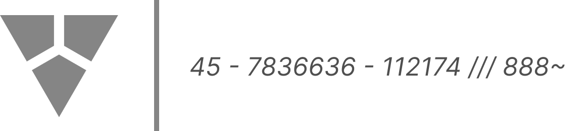
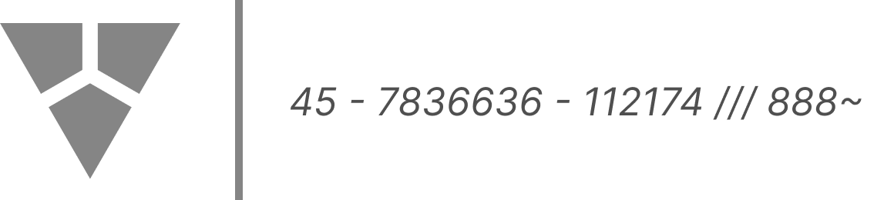

NEW BEARING
2496
"She has always been here for us. We will never falter to do the same for her"
- Mikolaj Karn
- Mikolaj Karn
New Bearing, the largest of the three factions,
believed that there is still hope
for Eden to rise from the ashes. They believed
that Eden can be saved through their efforts.
Some included attempts to shift the planet back
into place, developed protocols by which humans
can live to take advantage of the realities of
their new world, and protested against exploitation
by other planets and organisations
to take back their identity.

778342562 - 071702 - 101916 - 44
 
